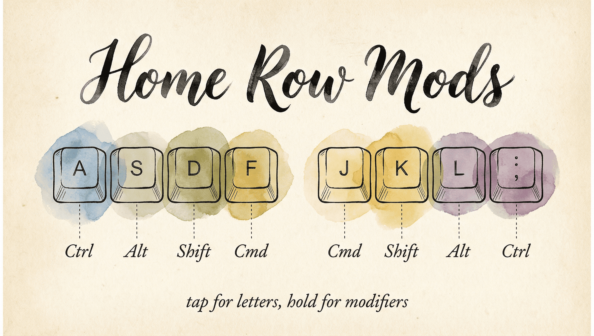
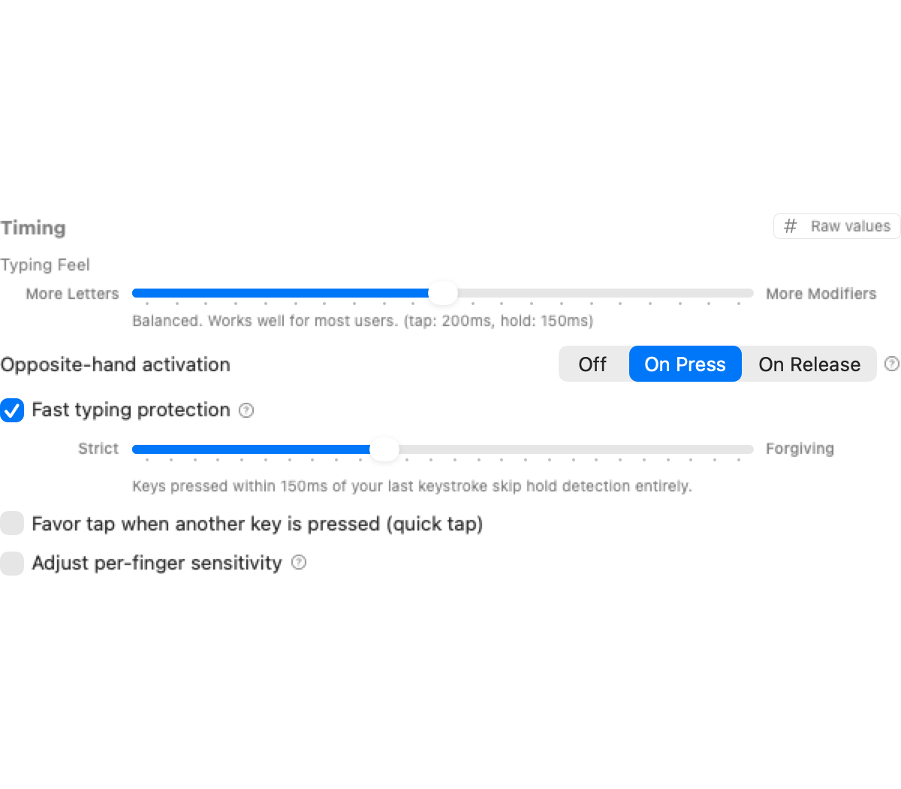
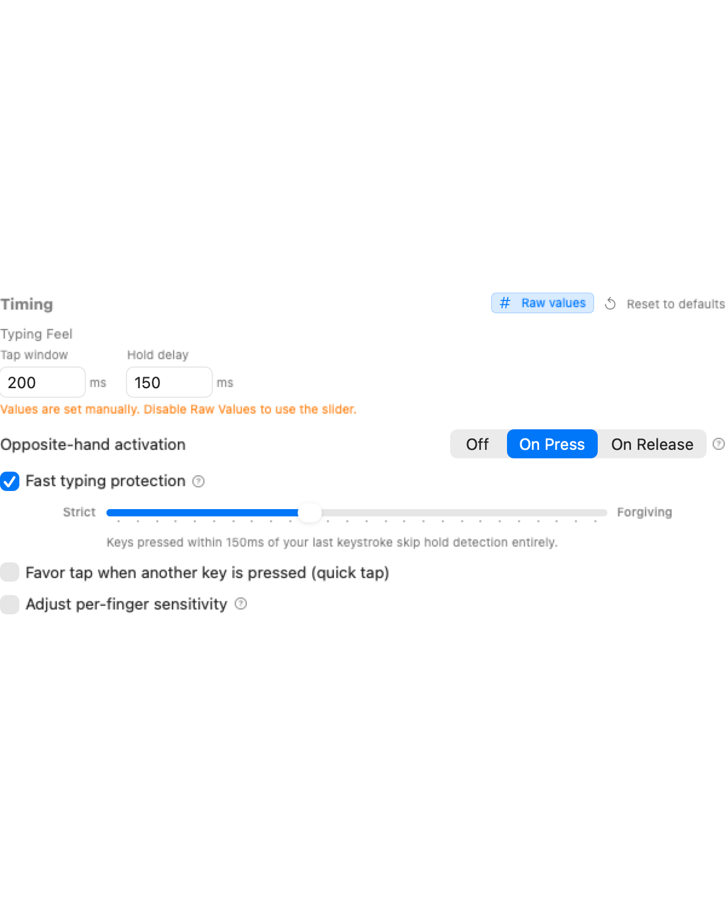

Every keyboard shortcut on your Mac requires a modifier — Command, Shift, Control, Option. Those keys are tucked into the bottom corners of your keyboard, forcing your fingers off the home row dozens of times an hour. Over a full workday, that's thousands of small reaches that slow you down and strain your hands.
Home row mods fix this by putting modifiers right under your fingertips:
┌─────┐ ┌─────┐ ┌─────┐ ┌─────┐ ┌─────┐ ┌─────┐ ┌─────┐ ┌─────┐
│ A │ │ S │ │ D │ │ F │ │ J │ │ K │ │ L │ │ ; │
│ ⇧ │ │ ⌃ │ │ ⌥ │ │ ⌘ │ │ ⌘ │ │ ⌥ │ │ ⌃ │ │ ⇧ │
└─────┘ └─────┘ └─────┘ └─────┘ └─────┘ └─────┘ └─────┘ └─────┘
Tap for letters, hold for modifiersTap a key normally and you get the letter. Hold it briefly and it becomes a modifier. Your hands never move — every shortcut is one fluid motion from the home row.
If you're new to keyboard customization, read Keyboard Concepts first for background on dual-role keys and layers.
Every home row key gets a second job:
| Key | Tap | Hold |
|---|---|---|
| A | a | Shift (⇧) |
| S | s | Control (⌃) |
| D | d | Option (⌥) |
| F | f | Command (⌘) |
| J | j | Command (⌘) |
| K | k | Option (⌥) |
| L | l | Control (⌃) |
| ; | ; | Shift (⇧) |
This is the CAGS layout (Command on index, Alt/Option on middle, Control on ring, Shift on pinky) — mirrored on both hands.
The result: any keyboard shortcut is one fluid motion. Hold F + press C = ⌘C (Copy). Hold A + press tab = ⇧Tab (Shift-Tab). No reaching, no contortion.
The defaults use the CAGS layout shown above. Practice for a few days — occasional misfires during fast typing are normal at first and improve as you adjust.
Tip: Start by using home row mods only for shortcuts you already know (⌘C, ⌘V, ⌘Z). Once those feel natural, expand to new shortcuts.
Once you've enabled home row mods, you can fine-tune how they feel. Open the rule's settings to access these controls.
KeyPath provides a slider to adjust the tap-hold threshold:

Screenshot — Typing Feel slider in rule settings: ┌─────────────────────────────────────────────────────┐
│ Typing Feel │
│ │
│ More Letters ────────●──────────── More Modifiers │
│ ↑ │
│ 200 ms │
│ │
│ Tap timeout: [ 200 ms ] │
│ Hold timeout: [ 200 ms ] │
└─────────────────────────────────────────────────────┘The rule settings name the active timer so you can tell what you are adjusting: Hold activation delay for ordinary tap-hold behavior, or Opposite-hand decision window for opposite-hand behavior. Controls that do not affect the selected mode, including Quick tap, stay out of the way.
Pinkies are slower than index fingers. KeyPath lets you add extra tolerance for slower fingers to prevent accidental holds:

Screenshot — Per-finger sensitivity sliders: ┌─────────────────────────────────────────────────────┐
│ Per-Finger Tolerance │
│ │
│ Pinky ████████████████████░ +40 ms │
│ Ring █████████████░░░░░░░░ +25 ms │
│ Middle █████████░░░░░░░░░░░░ +15 ms │
│ Index ██████░░░░░░░░░░░░░░░ +0 ms │
│ │
│ Slower fingers get more time before │
│ the hold activates. │
└─────────────────────────────────────────────────────┘When enabled, a quick tap-and-release always produces the letter, even if another key was pressed during the tap window. This is especially helpful for fast typists.
Quick tap is available only when opposite-hand activation is off. Opposite-hand behavior has its own decision rule and does not use the tap window or Quick tap term.
Start with defaults, then adjust one parameter at a time.
KeyPath uses two powerful features to make home row mods virtually misfire-free:
Hold actions (modifiers or layers) only activate when you press a key with the other hand. Same-hand typing always produces letters — no accidental modifiers during fast rolls.
Left Hand Right Hand
┌───┬───┬───┬───┬───┐ ┌───┬───┬───┬───┬───┐
│ Q │ W │ E │ R │ T │ │ Y │ U │ I │ O │ P │
├───┼───┼───┼───┼───┤ ├───┼───┼───┼───┼───┤
│ A │ S │ D │ F │ G │ │ H │ J │ K │ L │ ; │
├───┼───┼───┼───┼───┤ ├───┼───┼───┼───┼───┤
│ Z │ X │ C │ V │ B │ │ N │ M │ , │ . │ / │
└───┴───┴───┴───┴───┘ └───┴───┴───┴───┴───┘
Same hand → tap (letter) Example: F then D → "fd"
Cross hand → hold (modifier) Example: F then J → ⌘JThis uses Kanata's native tap-hold-opposite-hand with a global hand definition (defhands), replacing the older per-key workaround.
When you're typing quickly, the last thing you want is for "fd" to become Ctrl+D. Fast typing protection solves this: keys pressed shortly after your last keystroke produce the letter immediately — no hold detection, no waiting state.
 Screenshot — Fast typing protection in rule settings:
Screenshot — Fast typing protection in rule settings:
┌─────────────────────────────────────────────────────┐
│ [x] Fast typing protection │
│ │
│ Strict ──────────●──────────── Forgiving │
│ ↑ │
│ 150 ms │
│ │
│ Keys pressed within 150ms of your last keystroke │
│ skip hold detection entirely. │
└─────────────────────────────────────────────────────┘This is enabled by default at 150ms. Adjust the slider to match your typing speed — faster typists may want a lower value (strict), while slower typists can use a higher value (forgiving).
The same Fast typing protection is available for Home Row Layer Toggles. It keeps a key pressed shortly after normal typing as its letter, rather than unexpectedly activating its layer.
Different fingers move at different speeds. KeyPath lets you give slower fingers (pinkies) more time before the hold activates, while keeping faster fingers (index) responsive. This eliminates most accidental modifier activations.
Switching from Karabiner? See the From Karabiner-Elements guide for a detailed comparison of how home row mods work in both tools.
These are techniques being explored in the mechanical keyboard community. Some are in KeyPath today, others are planned or available through custom Kanata config.
After a tap resolves, temporarily disable all home row mods for the rest of the typing burst, re-enabling them after a brief idle. This prevents chain-reaction misfires.
Pioneered by Sunaku's home row mods configuration, which implements this via a dedicated "nomods" layer in Kanata.
Track sustained typing bursts and suppress modifier activation entirely during the streak. Only re-enable modifiers after a pause. This eliminates nearly all misfires during fast prose typing.
See Sunaku's bilateral combinations approach for a detailed implementation.
QMK firmware libraries (created by Pascal Getreuer) that make the tap/hold decision based on which hand pressed the next key. Chordal Hold was merged into QMK core in February 2025, making opposite-hand detection a built-in feature for QMK keyboards.
KeyPath's opposite-hand activation provides equivalent functionality for standard Mac keyboards via Kanata.
Apply the modifier immediately while the tap-hold decision is still pending. If the key resolves as a tap, the modifier is retroactively canceled. This reduces perceived latency for intentional modifier use.
Kanata supports eager mode via tap-hold-press and tap-hold-release variants. See the Kanata tap-hold documentation for details.
Shift is the most frequently used modifier during normal typing (capital letters, punctuation). Advanced configurations exempt Shift from streak suppression and anti-cascade so capitalization works naturally during fast typing, while still suppressing accidental Control, Option, and Command.